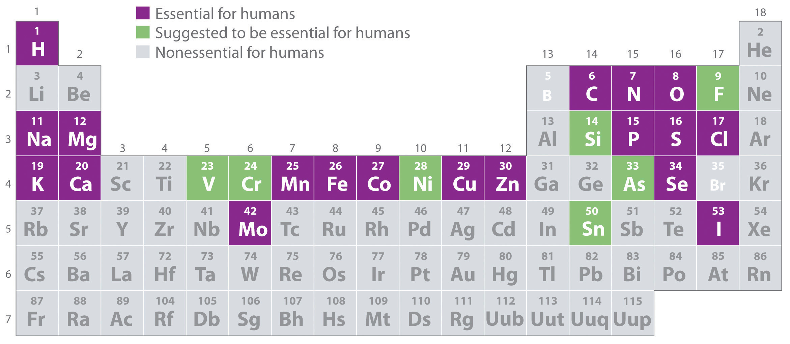
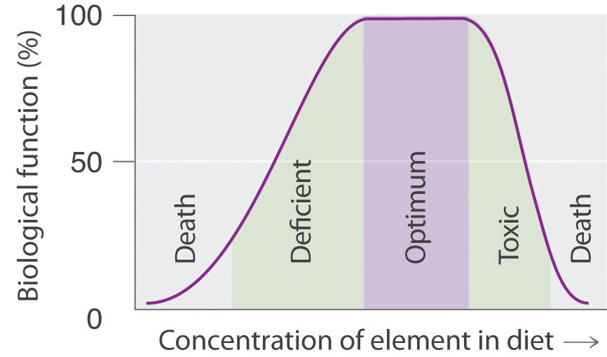

Of the approximately 115 elements known, only the 19 highlighted in purple in Figure 1.26 "The Essential Elements in the Periodic Table" are absolutely required in the human diet. These elements—called essential elementsAny of the 19 elements that are absolutely required in the human diet for survival. An additional seven elements are thought to be essential for humans.—are restricted to the first four rows of the periodic table (see Chapter 32 "Appendix H: Periodic Table of Elements"), with only two or three exceptions (molybdenum, iodine, and possibly tin in the fifth row). Some other elements are essential for specific organisms. For example, boron is required for the growth of certain plants, bromine is widely distributed in marine organisms, and tungsten is necessary for some microorganisms.
Figure 1.26 The Essential Elements in the Periodic Table
Elements that are known to be essential for human life are shown in purple; elements that are suggested to be essential are shown in green. Elements not known to be essential are shown in gray.
What makes an element “essential”? By definition, an essential element is one that is required for life and whose absence results in death. Because of the experimental difficulties involved in producing deficiencies severe enough to cause death, especially for elements that are required in very low concentrations in the diet, a somewhat broader definition is generally used. An element is considered to be essential if a deficiency consistently causes abnormal development or functioning and if dietary supplementation of that element—and only that element—prevents this adverse effect. Scientists determine whether an element is essential by raising rats, chicks, and other animals on a synthetic diet that has been carefully analyzed and supplemented with acceptable levels of all elements except the element of interest (E). Ultraclean environments, in which plastic cages are used and dust from the air is carefully removed, minimize inadvertent contamination. If the animals grow normally on a diet that is as low as possible in E, then either E is not an essential element or the diet is not yet below the minimum required concentration. If the animals do not grow normally on a low-E diet, then their diets are supplemented with E until a level is reached at which the animals grow normally. This level is the minimum required intake of element E.
The approximate elemental composition of a healthy 70.0 kg (154 lb) adult human is listed in Table 1.6 "Approximate Elemental Composition of a Typical 70 kg Human". Note that most living matter consists primarily of the so-called bulk elements: oxygen, carbon, hydrogen, nitrogen, and sulfur—the building blocks of the compounds that constitute our organs and muscles. These five elements also constitute the bulk of our diet; tens of grams per day are required for humans. Six other elements—sodium, magnesium, potassium, calcium, chlorine, and phosphorus—are often referred to as macrominerals because they provide essential ions in body fluids and form the major structural components of the body. In addition, phosphorus is a key constituent of both DNA and RNA: the genetic building blocks of living organisms. The six macrominerals are present in the body in somewhat smaller amounts than the bulk elements, so correspondingly lower levels are required in the diet. The remaining essential elements—called trace elements—are present in very small amounts, ranging from a few grams to a few milligrams in an adult human. Finally, measurable levels of some elements are found in humans but are not required for growth or good health. Examples are rubidium and strontium, whose chemistry is similar to that of the elements immediately above them in the periodic table (potassium and calcium, respectively, which are essential elements). Because the body’s mechanisms for extracting potassium and calcium from foods are not 100% selective, small amounts of rubidium and strontium, which have no known biological function, are absorbed.
Table 1.6 Approximate Elemental Composition of a Typical 70 kg Human
| Bulk Elements (kg) | Macrominerals (g) | ||
| oxygen | 44 | calcium | 1700 |
| carbon | 12.6 | phosphorus | 680 |
| hydrogen | 6.6 | potassium | 250 |
| nitrogen | 1.8 | chlorine | 115 |
| sulfur | 0.1 | sodium | 70 |
| magnesium | 42 | ||
| Trace Elements (mg) | |||
| iron | 5000 | lead | 35 |
| silicon | 3000 | barium | 21 |
| zinc | 1750 | molybdenum | 14 |
| rubidium | 360 | boron | 14 |
| copper | 280 | arsenic | ~3 |
| strontium | 280 | cobalt | ~3 |
| bromine | 140 | chromium | ~3 |
| tin | 140 | nickel | ~3 |
| manganese | 70 | selenium | ~2 |
| iodine | 70 | lithium | ~2 |
| aluminum | 35 | vanadium | ~2 |
Because it is difficult to detect low levels of some essential elements, the trace elements were relatively slow to be recognized as essential. Iron was the first. In the 17th century, anemia was proved to be caused by an iron deficiency and often was cured by supplementing the diet with extracts of rusty nails. It was not until the 19th century, however, that trace amounts of iodine were found to eliminate goiter (an enlarged thyroid gland). This is why common table salt is “iodized”: a small amount of iodine is added. Copper was shown to be essential for humans in 1928, and manganese, zinc, and cobalt soon after that. Molybdenum was not known to be an essential element until 1953, and the need for chromium, selenium, vanadium, fluorine, and silicon was demonstrated only in the last 50 years. It seems likely that in the future other elements, possibly including tin, will be found to be essential at very low levels.
Many compounds of trace elements, such as arsenic, selenium, and chromium, are toxic and can even cause cancer, yet these elements are identified as essential elements in Figure 1.26 "The Essential Elements in the Periodic Table". In fact, there is some evidence that one bacterium has replaced phosphorus with arsenic, although the finding is controversial. This has opened up the possibility of a “shadow biosphere” on Earth in which life evolved from an as yet undetected common ancestor. How can elements toxic to life be essential? First, the toxicity of an element often depends on its chemical form—for example, only certain compounds of chromium are toxic, whereas others are used in mineral supplements. Second, as shown in Figure 1.27 "Possible Concentrations of an Essential Element in the Diet", every element has three possible levels of dietary intake: deficient, optimum, and toxic in order of increasing concentration in the diet. Very low intake levels lead to symptoms of deficiency. Over some range of higher intake levels, an organism is able to maintain its tissue concentrations of the element at a level that optimizes biological functions. Finally, at some higher intake level, the normal regulatory mechanisms are overloaded, causing toxic symptoms to appear. Each element has its own characteristic curve. Both the width of the plateau and the specific concentration corresponding to the center of the plateau region differ by as much as several orders of magnitude for different elements. In the adult human, for example, the recommended daily dietary intake is 10–18 mg of iron, 2–3 mg of copper, and less than 0.1 mg of chromium and selenium.
Figure 1.27 Possible Concentrations of an Essential Element in the Diet
The deficient, optimum, and toxic concentrations are different for different elements.
How can elements that are present in such minuscule amounts have such large effects on an organism’s health? Our knowledge of the pathways by which each of the known trace elements affects health is far from complete, but certain general features are clear. The trace elements participate in an amplification mechanism; that is, they are essential components of larger biological molecules that are capable of interacting with or regulating the levels of relatively large amounts of other molecules. For example, vitamin B12 contains a single atom of cobalt, which is essential for its biological function. If the molecule whose level is controlled by the trace element can regulate the level of another molecule, and more and more molecules, then the potential exists for extreme amplification of small variations in the level of the trace element. One goal of modern chemical research is to elucidate in detail the roles of the essential elements. In subsequent chapters, we will introduce some results of this research to demonstrate the biological importance of many of the elements and their compounds.
About 19 of the approximately 115 known elements are essential for humans. An essential element is one whose absence results in abnormal biological function or development that is prevented by dietary supplementation with that element. Living organisms contain relatively large amounts of oxygen, carbon, hydrogen, nitrogen, and sulfur (these five elements are known as the bulk elements), along with sodium, magnesium, potassium, calcium, chlorine, and phosphorus (these six elements are known as macrominerals). The other essential elements are the trace elements, which are present in very small quantities. Dietary intakes of elements range from deficient to optimum to toxic with increasing quantities; the optimum levels differ greatly for the essential elements.